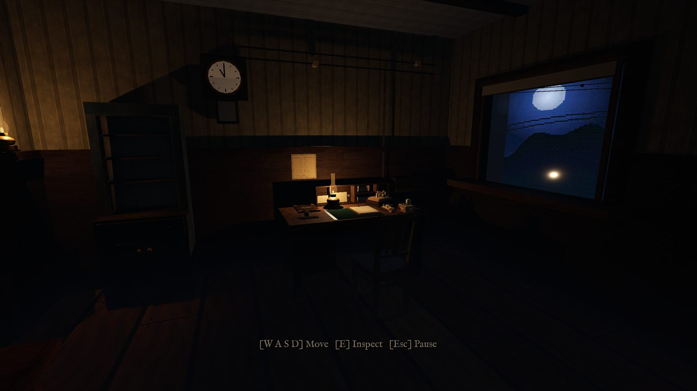
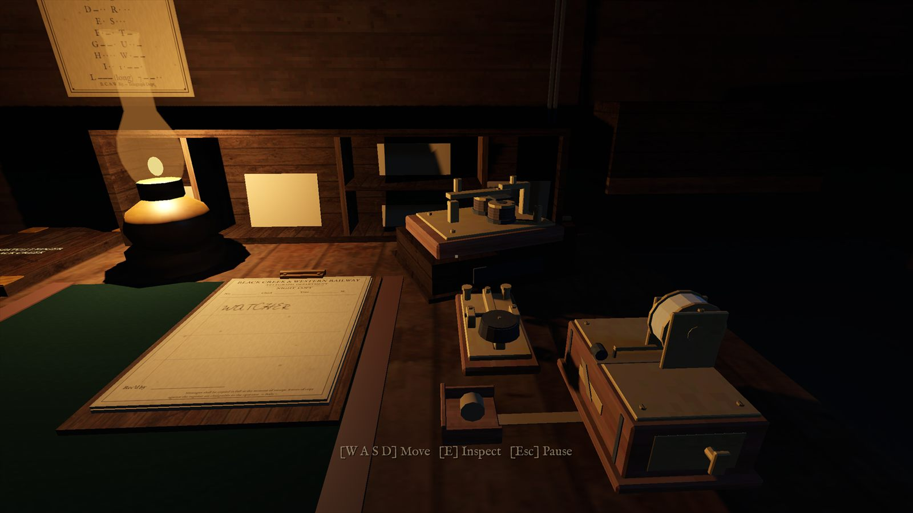
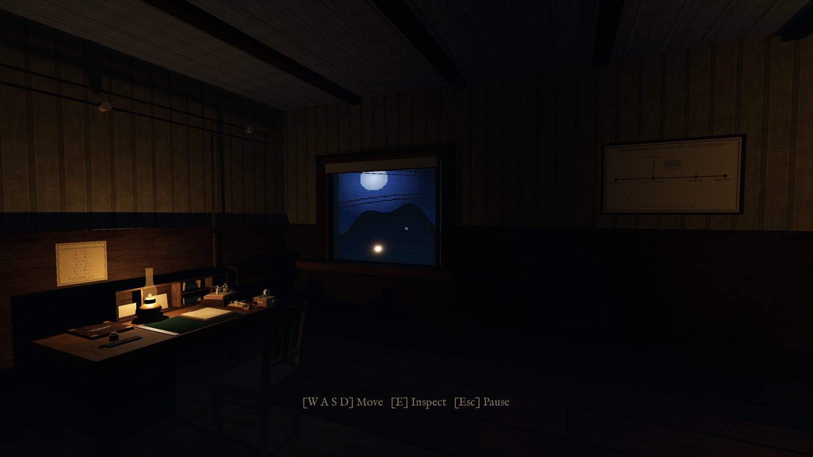
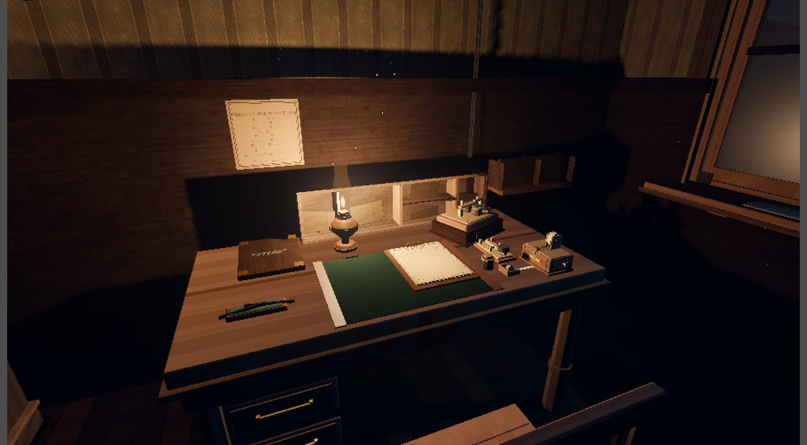

A telegraph office at night,
and a hand you cannot fully trust.
You are Elias Crane, a professional operator working the night shift for the Black Creek & Western Railway. The sounder gives you the message. Your hand writes it down. Most nights those two things agree. On this wire they stop agreeing.
You cannot watch everything at once.
Eleven at night to four in the morning. One room, one chair, one lamp. Every zone in the office wants your eyes at the same time, and the wire does not wait for you to turn around.
The only place the message exists before your hand touches paper.
Your own writing, filling line by line. Ink is a commitment.
Where trains go. Set the route wrong and something arrives that shouldn't.
Procedure, timestamps, signatures — the paper trail you will be judged by.
Locked until the line closes. It is supposed to stay locked.
The yard, the moon, and the figure that only exists between observations.
The office, from inside the shift.
Screenshots from the M1 office prototype — night one, running end to end.




Information is the threat
and the only weapon.
Morse you can actually verify
American railroad Morse, taught by the job, not by a tutorial. Learn it well enough to question the transcript without being told to.
The tape register never lies
A paper strip records marks and gaps straight from the line. It has no text, no opinion, and no access to your handwriting — the one honest witness in the room.
Mistakes are not reloads
No game over screen for a bad night. Wrong entries, delayed messages and weak evidence stay in the record and come back later, quieter and worse.
Fair audio
Critical Morse is always readable. Noise may eat a harmless word — never the one that would have saved you. Atmosphere is never allowed to cheat.
Day and night, two kinds of fear
By day you walk a damaged railroad town and read physical evidence. By night you sit alone and try to write down what you hear.
Nothing is definitively supernatural
Every strange event keeps a mundane reading. The office is allowed to be haunted; the evidence is also allowed to be a tired man, a bad wire, and a company with lawyers.
No chase. No monster. No jumpscare economy.
- Not a combat horror game — there is nothing to shoot and no one to outrun.
- Not a jumpscare machine — the tension comes from a document that disagrees with your memory.
- Not a Morse course — you learn the way an apprentice does, on the job, under noise.
- Not a walking simulator — the room is a machine and every object in it is a decision.